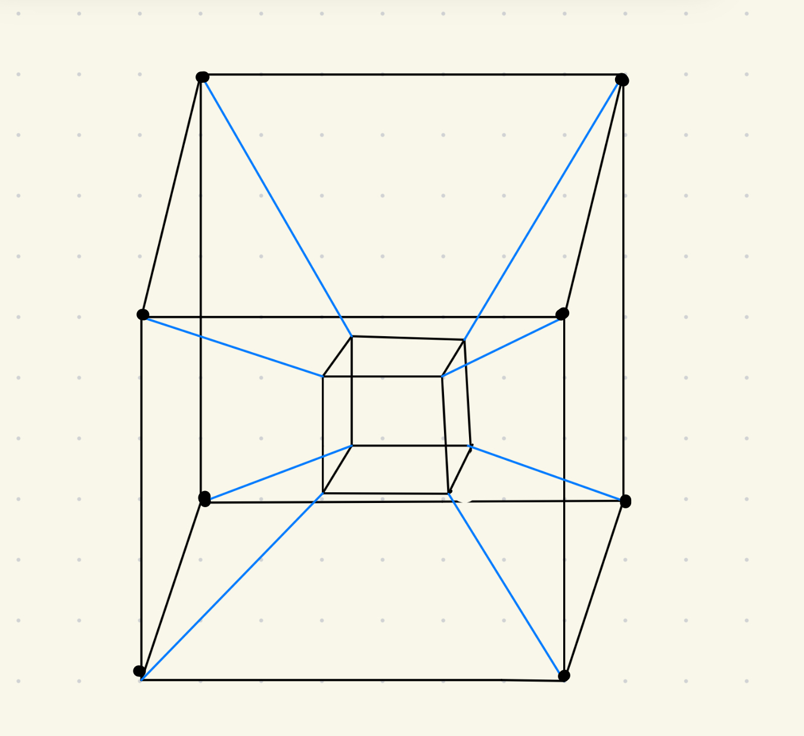

HIGH CONTRAST PEARLESCENT & VANTABLACK INITIALIZED
HELLO TESSERACT
XTK // CS460
Pearlescent Outer Shell & Deep Vantablack Void Core
🌓
DARK THEME
⏸
PAUSE
🌀
4D MORPH: OFF
✨
OPAL NACRE
🖼
ORIGINAL SKETCH
🔄
RESET CAM
ORIGINAL SKETCH
✕

Hand-Drawn Tesseract
• Outer Pearlescent Shell
• 8 Blue Connecting Struts
• Inner Vantablack Void Core